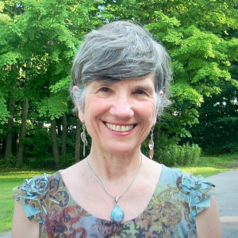

Welcome!
If you are reading this, then I am fairly certain that you want to change something in your life — and you have not been able to do so. I imagine you are not feeling as free or as happy and fulfilled as you would like. Perhaps even feeling stuck or trapped, or downright depressed or anxious. Feeling frustrated and discouraged at the very least. Perhaps you are even mad at yourself for being the way you are.
I believe there is a primary reason for this: You are not living your truth! You are not embodying your truth. If you were, you would feel happier and freer, enjoying your life rather than struggling and dealing with “issues”. It might mean mastering anxiety and depression, dealing with stress, healing phobias, stopping emotional overeating, ending procrastination, eradicating poor self-esteem, healing trauma, improving relationships, etc. The truth is that freedom and happiness are your divine birthright. But it’s impossible to embody your truth when your mind is filled with “ junk”. Our subconscious minds “run the show” with this junk, which consists of subconscious beliefs about yourself. Some of the most common beliefs are : “I don’t deserve”, “I’m not good enough”, “It’s not safe,” and “It’s not possible.” We all grow up with these kinds of beliefs and we live our lives as if they were true. It’s literally letting a younger you run your life!
Here’s the rub. Because it’s a “Yes” Universe, the Universe says “Yes” to whatever we put out there. If you believe something isn’t possible, then it won’t be possible. We also want to prove ourselves right. If we think we have to struggle over everything, well, guess what? Everything will be a struggle, and we will have proved ourselves right.
What else is possible? My goal is to help you embody your truth. Let me help you clear your mind of limiting beliefs and help you release trapped emotions. If a belief does not benefit you, change it! Trapped emotional energy also keeps you stuck and causes a lot of unnecessary pain, whether it be mental, emotional or even physical.
I invite you to summon your courage and say to yourself, “I am worth it. I want to change the way I am living my life.” Check out My Approach page, and, if you resonate with what I have written, then please contact me. It just might be the next step to creating a happier life for yourself.
The clock is ticking. What are you waiting for? I know this to be true: You are worth it! It is safe to shine your light. Whether or not we connect, I wish you much more happiness and freedom on your journey.
Meet Anne
I am a warm, compassionate energy psychology practitioner with over 30 years of experience. My heartfelt intention for every session is for you to more fully embody your truth, so you may experience greater freedom and happiness.
I have been actively committed to my own growth, healing and spiritual development for over three decades. Being a “constant learner” enables me to draw upon a wide variety of experience and training, as well as my intuition and inner guidance when I work with clients. I use a Mind/Body/Spirit approach, utilizing powerful energetic and spiritual approaches. I have experienced all the techniques I use with clients – they work!
Training and Certifications
Certified Personal Development Coach, Achieve Today
Matrix Reimprinting Training
Positive EFT
Master of Heart Studies, IAM University of the Heart
Certified Emotion Code Practitioner
Certified EFT Practitioner
TAT Certified Professional and Trainer
Gentle Reprocessing Practitioner
Thought Field Therapy, Levels I – IV
NLP Training
Certified SRT Practitioner
Shamballa Master
MSW, Smith College School for Social Work
Masters in International Administration, School for International Training
Approach/Techniques
My role is as your guide and facilitator in helping you clear limiting beliefs and trapped emotional energy so that you may more fully embody the truth of who you are. The main techniques I use are listed below. However, I often incorporate other techniques as well.
EFT/Meridian Tapping – Emotional Freedom Technique EFT, or Tapping, has been called psychological acupuncture without needles. While tapping on certain acupuncture points with your fingertips, you focus on a negative emotion or distressing thought. Research has shown that this shifts brain patterns that lead to unwanted thoughts, actions and emotions. It is a terrific self-help tool, and most of my clients would heartily agree with this. EFT/tapping has been used worldwide to relieve emotional and physical issues.
TAT – Tapas Acupressure Technique Developed by acupuncturist Tapas Fleming, TAT is an effective process that helps resolve stress and trauma. No needles involved – you simply gently touch certain acupuncture points in the TAT pose while I guide you through the process. Tapas writes, “TAT helps to heal the emotional causes of trauma, physical illnesses, phobias, negative beliefs and negative patterns. TAT is also a tool you can actively use to create the life you want to live now.”
Emotion Code – The Emotion Code is an energy healing technique that helps us to identify and release trapped emotions — which are harmful emotional energies from negative past events. Trapped emotions can cause depression and anxiety. They can block people from love and happiness and make them feel disconnected from others. Because trapped emotions are made of energy, just like the rest of the body, they exert an influence on the physical tissues, and can cause acute pain and even cancer. Releasing trapped emotions makes conditions right for the body to heal — so physical and emotional difficulties often disappear or become much more manageable. ~ Dr. Brad Nelson
Gentle Reprocessing – Gentle Reprocessing integrates guided imagery, EMDR components, inner child work, and cognitive therapy. It reduces symptoms of PTSD, Anxiety, Depression and abuse.
Heart Rhythm Meditation – There are many types of meditation. During Heart Rhythm Meditation, a heart-centered practice, you learn to coordinate your breath with your heartbeat. It is another great tool for de-stressing.
Testimonials
~ “Anne is an incredibly giving and nurturing person… She is intuitive and insightful. I have grown so much since beginning my work with her. She has taught me so much about myself but, more importantly, she has given me tools to be able to heal emotionally from the hurts in my life. I now feel like I have the ongoing ability to deal with the challenges in my life.” – P.F., Massachusetts
~ “Working with Anne was very helpful. In very quick fashion she helped me resolve an important and key issue. This is something I have tried to work on for a long time. I have no emotional charge around this now and feel this frees me up for moving on in many areas of my life.” – Connie in Connecticut
~ “I am so thankful for the compassion, care, generosity, support, kindness and understanding you have shown me. You helped me through much of the darkness, despair and hopelessness that once consumed my life, and always gave me the needed encouragement and hope that healing was and is possible!! I have learned so much from you, in terms of using tools to heal and empower myself.” – Nina, age 25
~ “I really felt better. I was thinking with a lot more clarity. It enabled me to know myself better and gave me a sense of well-being.” – J.K., age 50
~ “It is great to have met you and I deeply appreciate the work we did together. I was looking for something to “move me off the spot” in terms of addressing and releasing some emotional baggage. I truly wanted to better understand my thinking, motives and the “why” of my behaviors. To see if there were patterns for me that I thought were protecting me, but in fact were actually inhibiting growth… Your approach, which includes other alternative modalities like EFT, TAT and the Emotion Code was exactly what I needed. It was interesting and I saw results immediately. It also allowed me to take away tools to use on my own. I felt wonderful, with a gift of insight and a practice for my continued exploration of me. Thank you for being part of my journey of self discovery.” – Nancy, New Hampshire
~ “The work with Anne using the Emotion Code was profound and deeply healing. I highly recommend her and this technique.” – Sue, age 45
~ “Using The Emotion Code has been, literally, transformational for me. In my first session of the Emotion Code, anxiety and stress melted away effortlessly. I was astounded that healing could occur so gently and so quickly… Additional Emotion Code sessions have lifted depression, swept away grief, and erased fear. I am experiencing happiness, improved health and, for the first time in a very long time, I look forward to each day with joyful anticipation.” – Anne, age 59
~ “Tapas Acupressure Therapy (TAT) is like a breath of fresh air. I appreciate the gentle ease of the technique. I am in awe of the instantaneous effectiveness of TAT. With each session I emerge more joyful and I feel a strong, fresh renewal of self. My life has changed dramatically in a positive direction… I feel a freedom and excitement for life that I haven’t felt since I was a child.” – Diane, New Hampshire
Contact Anne
I work with clients throughout the United States and worldwide via telephone and Skype or Zoom. I also meet with clients at my office in Leominster, Massachusetts.
If you would like to talk briefly on the phone to see if what you need and what I offer are a “good fit,” please call me. You can reach me by calling 978-874-2757 or emailing me at anneciota@gmail.com
“Whatever you vividly imagine, ardently desire, sincerely believe, and
enthusiastically act upon must inevitably come to pass.” — Paul J. Meyer